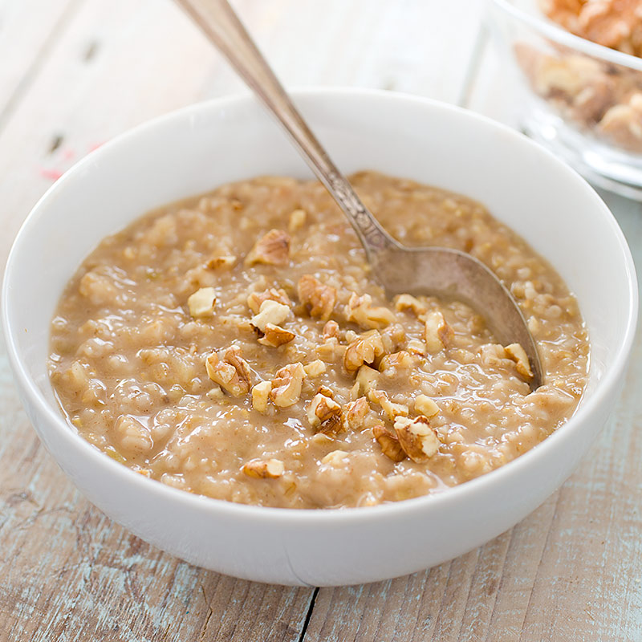

Oatmeal

Description:
This is a bowl of extra thich rolled oats. It's very important to not use instant oatmeal. We're going to add extra stuff to ours.
Ingredients:
- Bob's Red Mill Extra Thich Rolled Oats
- Peanut Butter
- Honey
- Oranges
- Cinnamon
Steps:
- Bring two cups of water to boil.
- Add one cup of oats to water.
- Bring down to medium-low heat.
- Cook for ~15 minutes or until water is almost entirely gone.
- Add one orange, two tablespoons of cinnamon, and two tablespoons peanut butter to hot oatmeal.
- Stir well.
- Enjoy.